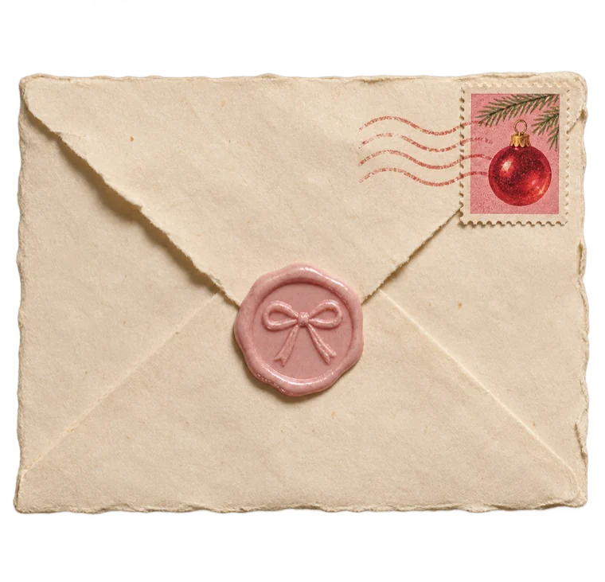

Что тебе подарит муж?

Вопрос 1 из 8
8 вопросов про него. В конце узнаешь, что он подарит тебе на Новый год.
Вспоминаем прошлый Новый год…
Что тебе подарит муж
Картинку можно выложить в сторис.
Сохрани картинку
Зажми картинку и выбери «Сохранить». Потом отправь её кому нужно.